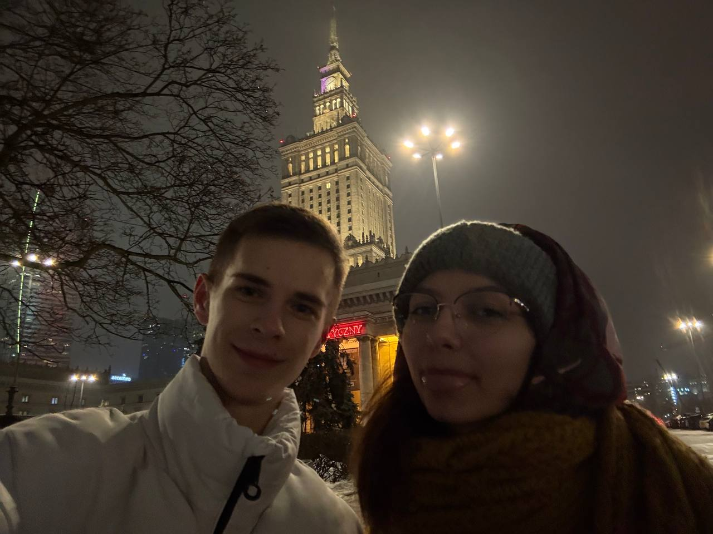
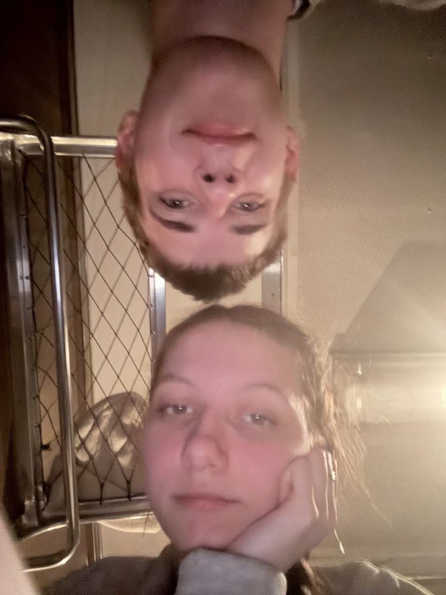
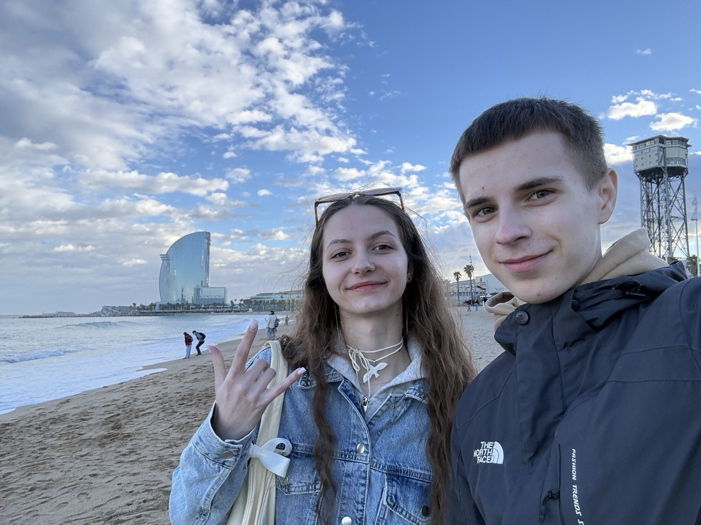

Це фото для мене не просто спогад з поїздки. Це момент коли я чітко відчув, що поруч зі мною є людина, яка бачить у мені більше, ніж я сам іноді можу побачити.
Ти підтримуєш, говориш чесно, не даєш зупинятися. І багато з того, ким я стаю зараз — з’являється саме завдяки тобі.
Я не знаю, куди нас приведе цей шлях далі, але знаю точно: моменти, подібні до цього, роблять його справжнім.
Warszawa · 06.02.2026

Потім був Франківськ. Спокійніший, простіший, без великого шуму — але саме тому по-своєму особливий.
Це була поїздка не про далеку країну і не про великі плани. Вона була про прогулянки, розмови, маленькі моменти й відчуття, що нам добре просто бути поруч.
Іноді саме такі дні запам’ятовуються найбільше. Бо в них немає нічого зайвого — тільки місто, дорога, трохи весняного повітря і людина, з якою навіть звичайний день стає теплішим.
Франківськ став ще одним маленьким доказом: шлях до мрій складається не тільки з великих подій. Він складається і з тихих моментів, які непомітно стають важливими.
Івано-Франківськ · березень 2026

Іспанія була про море, сонце і твій день народження. Але для мене вона була ще й про щось більше — про відчуття, що іноді найкращі подарунки не в речах, а в моментах, які ми проживаємо разом.
Я пам’ятаю не тільки місця. Я пам’ятаю дорогу, погляди, розмови, твою радість і той спокій, коли розумієш: усе відбувається саме так, як мало статися.
Ти хотіла моря — і ми були біля моря. Ти хотіла пригоди — і вона стала нашою. А я в той момент ще раз зрозумів, що мрії мають зовсім інший смак, коли їх розділяєш із правильною людиною.
Цей етап був не про ідеальну подорож. Він був про нас. Про те, що ми можемо вигадувати, ризикувати, їхати, пробувати — і все одно знаходити в цьому щось своє.
España · 03.04.2026